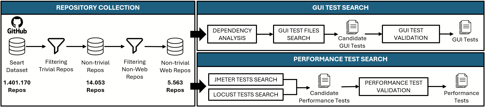
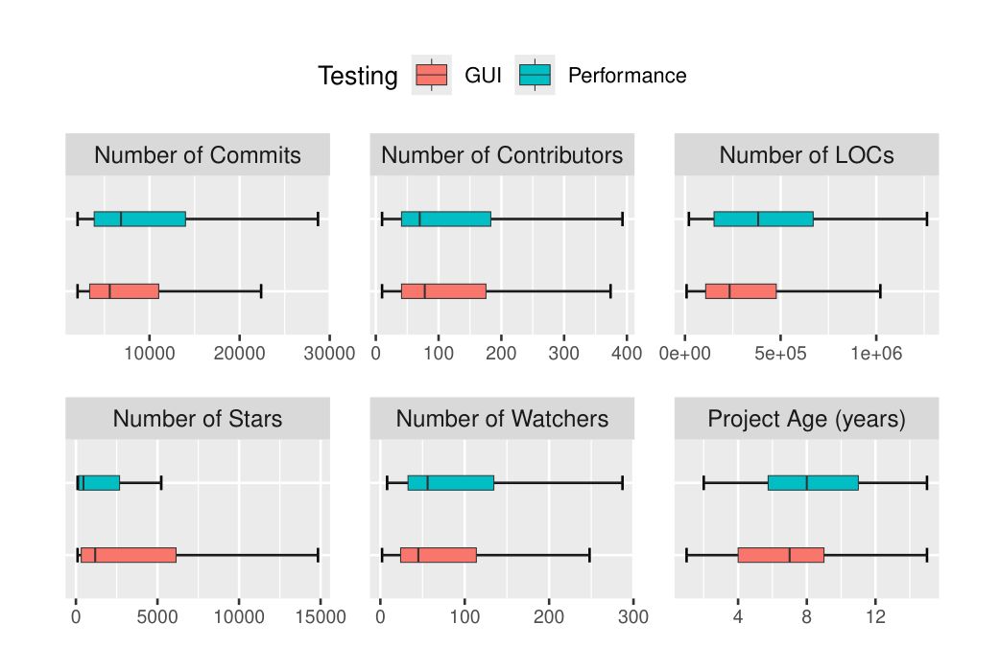
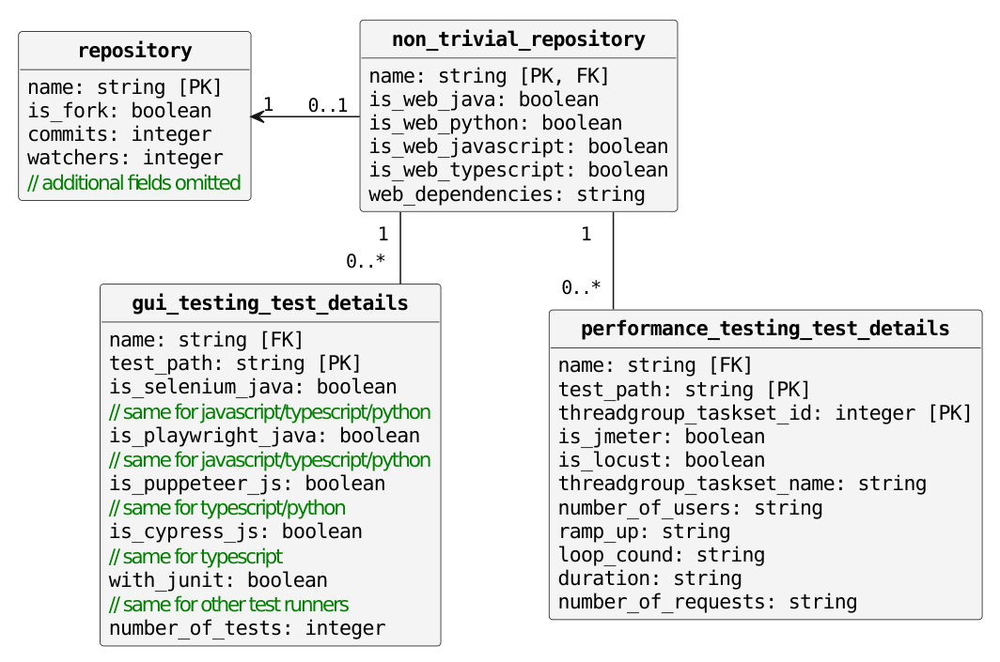

Sergio Di Meglio§, Luigi Libero Lucio Starace§, Valeria Pontillo¶, Ruben Opdebeeck¶, Coen De Roover¶, Sergio Di Martino§
§ Dipartimento di Ingegneria Elettrica e delle Tecnologie dell'Informazione, Università degli Studi di Napoli Federico II, Italia
¶ Software Languages (SOFT) Lab, Vrije Universiteit Brussel, Belgio
Traduzione italiana non ufficiale, a uso interno. Originale: E2EGit: A Dataset of End-to-End Web Tests in Open Source Projects, MSR 2025 — Data and Tool Showcase Track (Distinguished Dataset Award). DOI: 10.1109/MSR66628.2025.00121. La numerazione delle citazioni [1]–[31] rimanda alla bibliografia dell'originale, qui non riportata. Le figure sono estratte dal PDF originale e non sono state ridisegnate.
Gli autori hanno passato al setaccio 1,4 milioni di repository GitHub, ne hanno filtrati 14.053 per escludere i progetti "giocattolo", poi 5.563 applicazioni web non banali, e dentro questi hanno cercato test E2E: 472 repository con test GUI (43.670 test) e 84 con test di performance (271 test), di cui 13 con entrambi. Il risultato è un database SQLite pubblico, con lo storico dei commit, che serve a studiare come i test E2E nascono, invecchiano e si rompono.
Il test end-to-end (E2E) è un approccio di validazione del software che simula scenari d'uso realistici lungo l'intero flusso di lavoro di un'applicazione. Nel contesto delle applicazioni web, il test E2E coinvolge due attività: il test dell'interfaccia grafica (GUI), che simula le interazioni dell'utente con la GUI dell'applicazione web attraverso i browser, e il test di performance, che valuta la capacità del sistema di gestire il carico di lavoro. Nonostante l'importanza riconosciuta per la realizzazione di applicazioni web di alta qualità, la disponibilità di dataset su larga scala che contengano test E2E web reali resta limitata, e questo ostacola la ricerca nel settore.
Per colmare questa lacuna presentiamo E2EGit, un dataset completo di progetti web open source non banali, raccolti su GitHub, che adottano il test E2E. Analizzando oltre 5.000 repository web nei linguaggi di programmazione più diffusi (Java, JavaScript, TypeScript e Python), abbiamo identificato 472 repository che implementano 43.670 test GUI web automatizzati con i più popolari framework di automazione del browser (Selenium, Playwright, Cypress, Puppeteer), e 84 repository che presentano 271 test di performance automatizzati, realizzati con i più diffusi strumenti open source (JMeter, Locust). Tra questi, 13 repository implementano entrambe le tipologie di test, per un totale di 786 test GUI web e 61 test di performance. Il dataset è disponibile su Zenodo (DOI: 10.5281/zenodo.14234731).
Parole chiave — Test end-to-end, test GUI web, test di performance, mining di GitHub, applicazioni web.
Il test end-to-end (E2E) è essenziale per garantire l'affidabilità e la qualità delle applicazioni software, in particolare per i sistemi web usati da milioni di persone in settori come il commercio, il bancario e altri ancora [1], [2]. Validando i flussi di lavoro end-to-end dal punto di vista dell'utente, il test E2E assicura che tutte le componenti di un'applicazione funzionino insieme senza attriti, offrendo un'esperienza d'uso fluida e affidabile [3], [4]. Questa tipologia di test comprende due attività principali: il test dell'interfaccia grafica (GUI) e il test di performance.
La prima consiste nel simulare le interazioni dell'utente con l'applicazione attraverso un browser, per esempio navigando tra le pagine, inviando form o cliccando pulsanti [1]. La seconda misura quanto bene un sistema gestisce carichi di lavoro variabili. In ambito web, questi carichi sono definiti da sessioni utente, che consistono in una serie di richieste di rete (come HTTP o WSS) effettuate durante l'interazione con il sistema [5], [6]. Sebbene entrambe le pratiche possano essere svolte manualmente, questo approccio è spesso soggetto a errori e meno efficace nel replicare scenari complessi e realistici — soprattutto per quanto riguarda il test di performance. Per superare questi limiti, negli ultimi anni sono stati proposti framework e strumenti di automazione [7]. Per il test GUI web si usano framework di automazione del browser molto diffusi come Selenium, Cypress, Playwright e Puppeteer, che controllano il browser e simulano le azioni dell'utente [8], [9]. Nel dominio del test di performance sono largamente utilizzati strumenti open source come Apache JMeter e Locust, che simulano il carico su un server web, tipicamente definito da una o più sessioni utente (per esempio un Thread Group in Apache JMeter e un TaskSet in Locust) che rappresentano più utenti concorrenti con lo stesso comportamento nel tempo [10], [11].
Nonostante il test end-to-end (E2E) sia cruciale per garantire software di alta qualità e un'esperienza utente positiva, nella pratica viene spesso trascurato [4]. Questa negligenza si riflette nella letteratura, dove la limitata disponibilità di dataset nel contesto del test GUI web e del test di performance ha frenato il progresso della ricerca in questi ambiti [12]. Sebbene esistano alcuni dataset di test GUI web, essi si basano spesso su progetti di piccola scala come esercitazioni universitarie, oppure includono solo progetti che usano un particolare framework o un particolare linguaggio di programmazione. Per il test di performance, per quanto ci risulta, finora non è stato pubblicato alcun dataset, probabilmente perché le aziende raramente rendono pubblici questi test [13], [14].
Questo articolo si propone di colmare tale lacuna presentando E2EGit [15], un dataset completo di progetti web non banali ospitati su GitHub che adottano pratiche di test E2E. A tal fine abbiamo analizzato 5.563 repository web non banali, sviluppati con almeno uno dei linguaggi di programmazione più diffusi per lo sviluppo web, cioè Java, JavaScript, TypeScript e Python. Ogni repository è stato elaborato per identificare 1) la presenza di test GUI web realizzati con i quattro framework di automazione del browser più usati, cioè Selenium, Playwright, Cypress e Puppeteer; e 2) la presenza di test di performance condotti con gli strumenti open source più diffusi, JMeter e Locust [13], [16].
Al termine del processo di mining abbiamo identificato 472 repository contenenti test GUI web, per un totale di 43.670 casi di test, e 84 repository contenenti test di performance, per un totale di 271 casi di test. Tra questi, 13 repository implementano entrambe le tipologie di test, contribuendo con 786 test GUI web e 61 test di performance, che sono inclusi nei rispettivi totali.
Questa sezione descrive la pipeline di mining mostrata nella Figura 1 per la raccolta e l'analisi dei repository da GitHub. Nel primo passo i repository vengono raccolti e filtrati per identificare le applicazioni web di complessità non banale. Nella seconda fase, dopo aver clonato i repository in locale, vengono eseguite due analisi separate per identificare i test GUI e i test di performance.

Per raccogliere i repository abbiamo usato lo strumento SEART1, sviluppato da Dabic et al. [17], ampiamente utilizzato in letteratura per il mining di repository GitHub. Al momento della raccolta, nel maggio 2024, SEART riportava un sottoinsieme di 1.401.170 repository. Data la grande quantità di repository, abbiamo applicato un processo di filtraggio per escludere i progetti "giocattolo". Questa fase di filtraggio ha seguito criteri consolidati dalla ricerca precedente [18]–[20], in particolare:
Questi criteri hanno ridotto il campione a 14.053 repository. Poiché il nostro studio riguarda le applicazioni web, abbiamo ulteriormente affinato la selezione includendo solo i repository non banali che avessero almeno una dipendenza da un framework web. Tuttavia, data la grande varietà di tecnologie di programmazione web, il dataset va circoscritto ai framework più adottati (per esempio Spring Boot, React e Angular secondo [21]; l'appendice online [15] riporta l'elenco completo dei framework considerati) per ciascuno dei quattro linguaggi più diffusi nello sviluppo web (cioè JavaScript, TypeScript, Python e Java secondo [22]). Dopo questo filtraggio restano 5.563 applicazioni web.
Questa fase si articola in tre passi ed è stata applicata a ciascun repository di applicazioni web per identificare i test GUI web:
1) Verifica delle dipendenze. Abbiamo analizzato le dipendenze dei progetti per identificare l'uso di framework di automazione del browser, concentrandoci sui più comuni secondo [23], cioè Selenium, Playwright, Puppeteer e Cypress. La ricerca è stata fatta estraendo le dipendenze dai file di gestione delle dipendenze: pom.xml e build.gradle per i progetti Java, package.json per JavaScript e TypeScript, e requirements.txt per Python.
2) Individuazione dei file di test GUI web. Se il repository include almeno una delle dipendenze precedenti, abbiamo identificato i potenziali test GUI web, cioè i file che importano framework di automazione del browser.
3) Validazione dei test GUI web. Abbiamo analizzato automaticamente ogni file sorgente candidato per determinare se le dipendenze del framework di automazione identificate fossero effettivamente usate per il test GUI web. In particolare, abbiamo verificato la presenza di un motore di test insieme al codice di test implementato. L'attenzione era rivolta ai motori di test più diffusi [24], tra cui JUnit e TestNG per Java; Jest, Mocha e Jasmine per JavaScript e TypeScript; e PyTest e unittest per Python. Ogni motore di test ha una sintassi specifica, come @Test in JUnit e TestNG, it o test in Jest, Mocha e Jasmine, e test_ in PyTest e unittest. Questo processo ha permesso di identificare 472 repository contenenti almeno un test GUI web implementato.
Questa fase, svolta in parallelo alla precedente, mira invece a cercare i test di performance. Ci siamo concentrati su Locust e Apache JMeter, riconosciuti come gli strumenti open source più rappresentativi per il test di performance, ampiamente adottati sia nella ricerca accademica sia in contesti aziendali [13], [16]. L'identificazione dei test di performance ha previsto processi distinti, su misura per ciascuno strumento:
requirements.txt. Quando la dipendenza è presente, la pipeline cerca nel repository i file Python che importano Locust..jmx. Per identificare i test di performance creati con JMeter è quindi bastato cercare i file con estensione .jmx.Nel passo finale, la validazione dei test di performance, abbiamo verificato che gli artefatti di test identificati fossero realmente destinati al test di performance. A tal fine abbiamo controllato che ogni test includesse almeno un ThreadGroup o TaskSet e almeno una richiesta di rete associata. Per JMeter questa validazione è stata condotta automaticamente, analizzando i file .jmx; per Locust l'analisi è stata svolta manualmente dai primi due autori. Dopo la validazione abbiamo identificato 84 repository contenenti almeno un test di performance implementato.
Il dataset E2EGit comprende 43.670 test GUI web provenienti da 472 repository e 271 test di performance provenienti da 84 repository. Da notare che il dataset include anche 13 repository che integrano entrambe le tipologie di test, con 786 test GUI web e 61 test di performance. In media, i repository con test GUI web contengono 92,5 test, mentre quelli con test di performance ne contengono in media 5. La Tabella I offre una panoramica del dataset in base ai framework e agli strumenti analizzati.
| Test GUI web | ||
|---|---|---|
| Framework di automazione del browser | N. repository | N. test |
| Selenium | 87 | 10.464 |
| Playwright | 197 | 18.175 |
| Puppeteer | 20 | 302 |
| Cypress | 187 | 14.733 |
| Test di performance | ||
| Generatore di carico | N. repository | N. test |
| Apache JMeter | 72 | 244 |
| Locust | 13 | 27 |
I repository presentano caratteristiche eterogenee, come evidenziato dai boxplot della Figura 2. L'età dei progetti va da progetti appena avviati a progetti consolidati con dieci anni di vita, mentre la dimensione del codice varia da poche migliaia di righe a oltre un milione. Anche gli indicatori di attività, come il numero di commit e di contributori, differiscono sensibilmente: alcuni progetti sono molto attivi e collaborativi, con centinaia di contributori, mentre altri mostrano una manutenzione minima.

Il dataset è memorizzato come database SQLite e il suo schema è riportato nella Figura 3. La tabella repository contiene informazioni su 1,5 milioni di repository raccolti con SEART nel maggio 2024, con 34 campi che ne descrivono le caratteristiche, tra cui il numero di commit, il numero di contributori e l'ultimo commit su cui è stata eseguita la pipeline di mining. La tabella non_trivial_repository, sottoinsieme della precedente, include i repository che hanno superato le due fasi di filtraggio descritte nella Sezione II. Per ciascun repository indichiamo l'uso di framework per Java, JavaScript, TypeScript o Python: per i repository che usano più framework i campi corrispondenti (per esempio is_web_java) sono impostati a vero, e il campo web_dependencies elenca tutti i framework web rilevati.
I dettagli sui test GUI web rilevati sono riportati nella tabella gui_testing_test_details, che fornisce informazioni a livello di file di test. Ogni riga rappresenta un file di test e ne indica il percorso, il framework di automazione del browser usato, il motore di test impiegato e il numero di test implementati nel file. Per agevolare l'analisi, il dataset finale include anche gui_testing_repo_details (non mostrata nella Figura 3 per brevità), che aggrega i dati dei test GUI web a livello di repository: per ogni repository con test GUI, questa tabella riassume il numero di file di test per ciascun framework considerato, i motori di test impiegati e il numero totale di test identificati.

repository a non_trivial_repository e questa alle due tabelle di dettaglio dei test. gui_testing_repo_details, la quinta tabella, non è mostrata per brevità.Per quanto riguarda il test di performance, la tabella performance_testing_test_details è composta da 410 righe, una per ciascun ThreadGroup o TaskSet identificato. La tabella include dettagli come il percorso del file, se il test usa Apache JMeter o Locust, e parametri estratti come il numero di gruppi di thread, di utenti concorrenti e di richieste. Va osservato che alcuni campi possono essere assenti: per esempio, file esterni (come i CSV che definiscono i carichi di lavoro) potrebbero non essere disponibili, oppure, nel caso dei test Locust, parametri come durata e utenti concorrenti possono essere specificati da riga di comando anziché dentro i file di test. Inoltre alcuni campi (per esempio number_of_users) possono contenere espressioni parametriche nella forma ${foo}, che rimandano a variabili d'ambiente specifiche che non siamo stati in grado di determinare durante il mining: in questo caso il campo contiene l'espressione parametrica come stringa.
Il dataset E2EGit è particolarmente prezioso perché contiene un gran numero di test provenienti da repository non banali, con uno storico di commit esteso, che fanno uso di framework web e di automazione diversi. Questo lo rende adatto a una varietà di scopi.
Un'area di esplorazione chiave è la qualità e la manutenzione dei test. I ricercatori possono indagare la presenza di "test smell" [25], come ridondanza, fragilità o struttura scadente, per valutare la qualità complessiva dei test. Questa analisi può guidare l'applicazione di tecniche di refactoring per migliorare il design, la manutenibilità e la robustezza dei test. Per esempio, il dataset potrebbe abilitare studi su come il refactoring sistematico dei test mitiga gli smell identificati, riduce il costo di manutenzione e aumenta la stabilità delle suite nel tempo. Inoltre il dataset potrebbe sostenere studi sull'impatto delle modifiche al codice applicativo sui test, rivelando schemi ricorrenti nel modo in cui le modifiche al codice incidono su stabilità e affidabilità.
Il dataset può anche essere una risorsa preziosa per creare dataset specializzati per addestrare modelli di machine learning e grandi modelli linguistici (LLM). Questo è particolarmente rilevante per far avanzare la ricerca in aree come la generazione e la riparazione automatica dei test, che sono ancora in una fase iniziale [26]. Inoltre E2EGit può aiutare la ricerca che richiede sistemi con più versioni e bug identificati per la valutazione, come la prioritizzazione dei casi di test e il test di regressione: gli studi esistenti si basano spesso su applicazioni obsolete [12], mentre E2EGit rappresenta un'alternativa più attuale e solida.
Dal punto di vista industriale, E2EGit può offrire indicazioni preziose per il test di performance, fornendo esempi di come i carichi di lavoro sono strutturati per diverse tipologie di applicazione. Queste informazioni possono aiutare a rifinire le strategie di test di performance per progetti simili [27]. Infine il dataset può essere sfruttato per il benchmarking degli strumenti di test, consentendo confronti tra framework di automazione del browser e generatori di carico per valutarne le prestazioni su applicazioni reali.
Validità interna. La principale minaccia interna è la selezione dei framework web e degli strumenti di test E2E, che può aver portato all'esclusione di alcuni repository o test. Tuttavia abbiamo incluso i quattro linguaggi di programmazione più diffusi [22], i 15 framework web più usati per ciascuno [21] e gli strumenti di automazione del browser e di generazione di carico più affermati [13]. Riteniamo che il dataset rifletta lo stato attuale dell'adozione del test E2E su GitHub.
Validità esterna. Una minaccia chiave è il focus sui progetti open source di GitHub, che rappresenta solo un sottoinsieme del più ampio ecosistema software. Di conseguenza i risultati possono non generalizzarsi ad altri contesti, come i progetti industriali. Per affrontare il problema, tutti i materiali sono stati resi pubblicamente disponibili per incoraggiare ulteriori ricerche e validazioni in contesti diversi [15].
Questa sezione esamina la letteratura sulla disponibilità di dataset per il test GUI web e il test di performance nelle applicazioni web, evidenziando lacune significative. Per il test di performance, per quanto ci risulta, nessuno studio si è concentrato sulla creazione di dataset pubblici, probabilmente perché le aziende tengono privati questi test [13], [14].
Per il test GUI web sono stati fatti alcuni tentativi. Christophe et al. [28], in uno studio datato, hanno indagato la diffusione del test GUI web scritto con Selenium nei progetti Java open source, rendendo i dati disponibili. Gortazar et al. [29] hanno proposto di raccogliere dataset di test GUI da GitHub usando 12 semplici criteri di denominazione, ottenendo 114 progetti; la loro metodologia però mancava di passi di verifica espliciti, con il rischio di falsi positivi. Sanchez et al. [30] hanno costruito un piccolo dataset con sei bug e pochi test GUI su tre applicazioni sviluppate da studenti. Fuad et al. [31] hanno introdotto il dataset WebEV, con test GUI web da 100 progetti GitHub; il loro lavoro però si concentrava solo sul framework Cypress, e il dataset al momento in cui scriviamo non è disponibile, perché il repository risulta vuoto. Il nostro dataset mira a colmare questa lacuna offrendo una raccolta completa di repository con test automatizzati per GUI web e performance.
Il test end-to-end è cruciale per garantire la qualità del software, soprattutto nelle applicazioni web. Tuttavia la mancanza di dataset completi in quest'area ha frenato il progresso sia nella ricerca accademica sia nelle pratiche industriali. Per colmare questa lacuna abbiamo rilasciato il dataset E2EGit, che include 472 repository web non banali con 43.670 test GUI web, e 84 repository con 271 test di performance. Tra questi, 13 repository implementano entrambe le tipologie di test, con 786 test GUI web e 90 test di performance [15].
Riteniamo che E2EGit sia una risorsa preziosa per ricercatori e professionisti. Potrebbe sostenere studi sull'evoluzione e la manutenzione dei test E2E, sulla loro fragilità, sulla relazione tra modifiche al codice e modifiche ai test e sui pattern nei carichi di lavoro dei test di performance. Inoltre il dataset ha il potenziale per favorire avanzamenti nell'automazione dei test, come la generazione e la riparazione automatica, e per aiutare l'addestramento di modelli di machine learning e di LLM specifici per il dominio.
Nell'ambito della nostra agenda futura prevediamo di ampliare e aggiornare il dataset includendo nuovi repository e supportando framework e strumenti aggiuntivi.
zenodo.org/records/14221860, una versione precedente. Per citare, usa il DOI dell'abstract e indica la versione che hai effettivamente scaricato.SELECT SUM(number_of_tests) FROM gui_testing_repo_details restituisce 43.670: il totale del paper è giusto, è la tabella che sovra-conta. Se ricostruisci la tabella, spiega la differenza.loop_cound è un refuso solo della figura. Nella Figura 3 il campo si chiama loop_cound, ma nello schema SQLite reale la colonna è loop_count (verificato con PRAGMA table_info). Nelle query usa il nome corretto: la figura è sbagliata, il database no.Nota sulle fonti. Le tre figure sono estratte dal PDF originale e mantenute in inglese per non alterarne il contenuto. La tabella è stata ricomposta in italiano con gli stessi valori. La bibliografia [1]–[31] non è riportata: fai riferimento al PDF originale in E2EGit_MSR2025_C4.pdf.